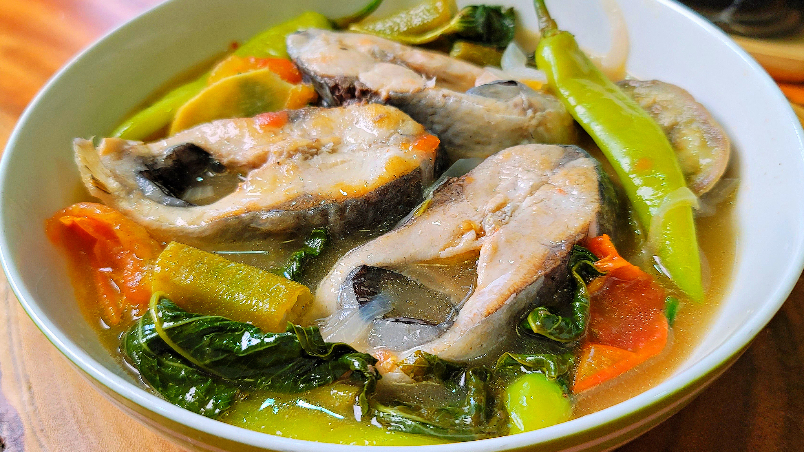
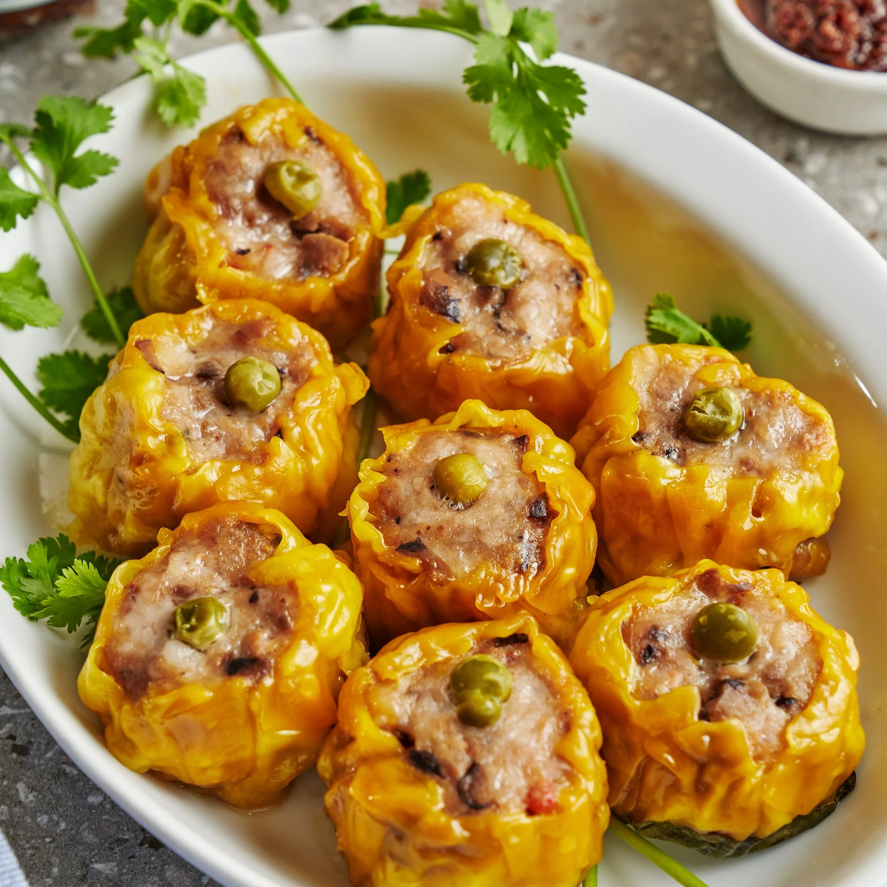

Fish

Sardines Fish Ball with Sweet and Sour Sauce
Prep : 5 mins | Cook : 10 mins

Ginataang Sapsap
Prep : 5 mins | Cook : 20 mins

Bangus Sisig
Prep : 10 mins | Cook : 25 mins

Creamy Garlic Salmon
Prep : 10 mins | Cook : 20 mins

Fish in Coconut Milk with Pineapple
Prep : 10 mins | Cook : 45 mins
Sinigang na Bangus
Prep : 15 mins | Cook : 45 mins

Filipino Style Escabeche
Prep : 10 mins | Cook : 30 mins

Baked Garlic Salmon and Easy Tofu Sisig
Prep : 10 mins | Cook : 30 mins

Creamy Baked Salmon
Prep : 10 mins | Cook : 25 mins

Burger Steak Sardinas
Prep : 10 mins | Cook : 15 mins

Sinigang Sa Miso
Prep : 30 mins | Cook : 40 mins
Siomai (Pork and Shrimp) with Chili Garlic Oil
Prep : 30 mins | Cook : 1 hr

Chop Suey
Prep : 10 mins | Cook : 30 mins

Pork Monggo with Crispy Galunggong
Prep : 10 mins | Cook : 50 mins